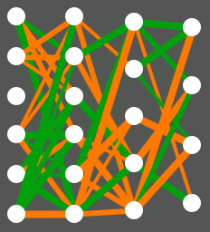

Comme expliqué dans d'autres parties du guide, un individu correspond à une voiture et à son conducteur. Chaque individu a donc son propre réseau de neurones, qui lui permet de prendre des décisions de pilotage.
Les modèles utilisés sont des réseaux de neurones à propagation avant. Ce sont donc des réseaux très simples.
Commençons par quelques définitions :
Voici une image pour mieux comprendre :

Un réseau de neurones. Une connexion est verte si elle est positive, orange si elle est négative. La valeur absolue de chaque connexion est représentée par son épaisseur. Si elle a la valeur 0, elle n'est pas affichée.
On remarque quatre colonnes de neurones, qui correspondent aux couches.
Les neurones de la couche d'entrée ne sont pas concernés car leur valeur leur est assignée.
Pour les autres, la valeur d'un neurone correspond à la somme des valeurs des neurones de la couche précédente, pondérées par leur connexion au présent neurone. Pour éviter que la valeur d'un neurone du réseau ne devienne trop grande par rapport aux autres, cette somme pondérée est ensuite passée à travers une fonction d'activation. Elle sert à maintenir les valeurs entre -1 et 1. On utilise ici la fonction Tangente Hyperbolique.
Le réseau de neurones propage donc les valeurs des caméras et la vitesse de la voiture, et les analyse jusqu'à la couche de sortie. On défini arbitrairement que son choix de pilotage correspond au neurone de sortie avec la valeur la plus élevée.
Par exemple, un bon conducteur donnera au neurone Freiner la plus grande valeur quand un obstacle se trouve devant. Ce sont ses connexions qui lui permettront de prendre les bonnes décisions
D'où viennent les connexions des réseaux de neurone ?
Il est impossible pour un être humain de savoir quelles connexions donner au réseau pour qu'il conduise bien. On commence donc avec des réseaux générés aléatoirement. Néanmoins, un individu donné n'apprendra jamais de ses erreurs dans le cadre de ce logiciel. Nous détaillerons cela dans la partie suivante.
Un individu tel que défini précédemment doit pouvoir trouver sa place au sein d'une population, pour que l'évolution puisse se produire. Il doit pour cela avoir un génome. Chaque connexion de son réseau doit donc être considérée comme un gène. Ainsi, ses caractéristiques de pilotage sont assimilables à des phénotypes.
Chaque individu reçoit ses gènes soit aléatoirement à la génération 0, soit de ses parents. Ils ne changent jamais au cours de sa vie, ainsi l'individu n'apprend pas. Une amélioration des conducteurs au cours du temps vient forcément de l'évolution génétique. Plus d'information dans la partie du guide portant sur l'Algorithme Génétique.
A chaque instant au cours de sa vie, l'individu reçoit les données de sa voiture et prend des décisions, ainsi que décrit plus haut. Plus il parcourt de distance, et plus il aura de chances de se reproduire.
Chaque réseau de neurones peut-être exporté sous une forme textuelle, qui décrit toute son architecture et ses connexions. Cela permet de sauvegarder des individus pendant l'évolution, pour les insérer dans une nouvelle population ou dans l'onglet Expériences.